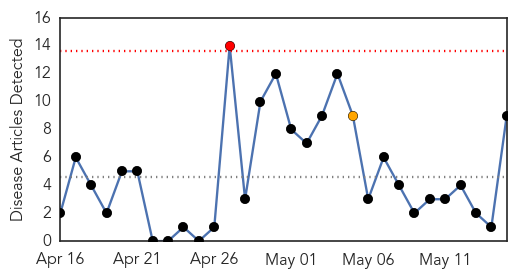
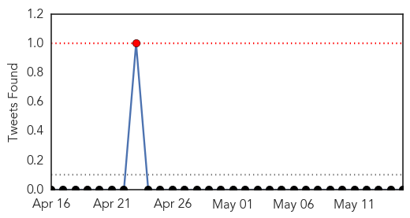
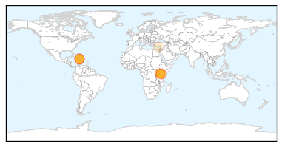
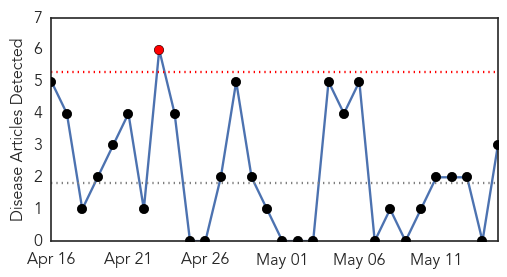
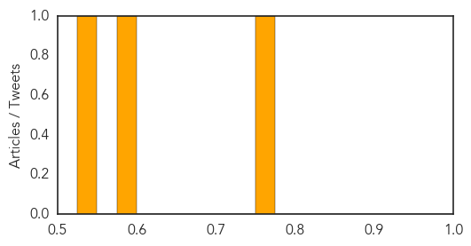

Cholera
30-Day Web Trend
1 alerts, 1 warnings

30-Day Twitter Trend
1 alerts, 0 warnings

Article Locations
Article Confidences

Top Articles:
- 0.999
- The most from the coast
- 0.999
- WHO's original sin
- 0.996
- Senior UN official calls for “urgent attention” to cholera outbreak in Haiti
- 0.995
- Nairobi floods, poor hygiene accelerate cholera outbreak in the city
- 0.995
- Haiti: senior UN official says cholera outbreak needs ‘urgent attention’ - Haiti
- 0.992
- Cholera death toll jumps to 53 as two more die in Kisumu and 24 are hospitalised - Kenya
- 0.984
- Haiti Still Faces “Humanitarian Emergency” From Cholera
- 0.962
- Kenya: Cholera death toll jumps to 53 as two more die in Kisumu and 24 are hospitalised
- 0.559
- UN chief warns of epidemics ahead of Nepal monsoons
Top Tweets:
-
No tweets found for May 15, 2015
Pertussis
30-Day Web Trend
1 alerts, 0 warnings

30-Day Twitter Trend
0 alerts, 0 warnings

Article Locations
Article Confidences
Top Articles:
Top Tweets:
-
No tweets found for May 15, 2015